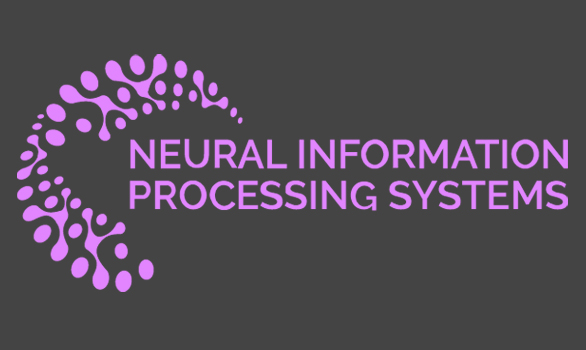
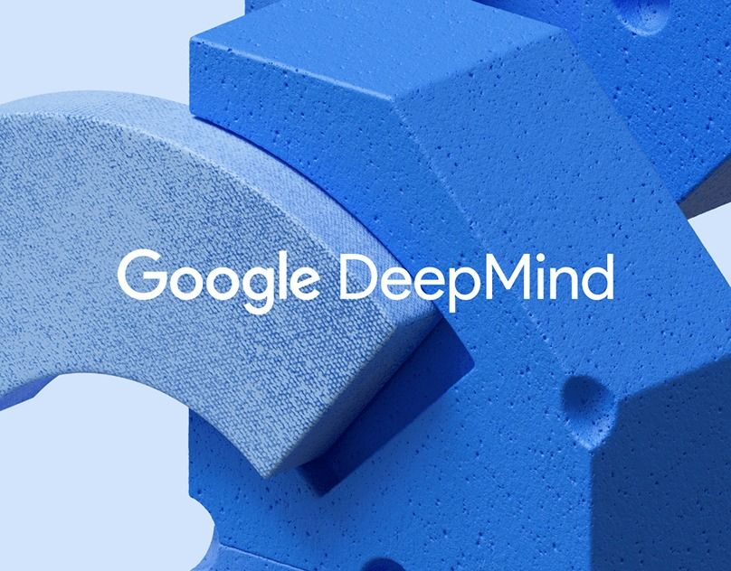

Machine Learning Engineer
PayGlocal · Fintech Startup
Real-time payment risk systems. Designed time-series signal-based personalized risk model. Reduced false alerts by 50%+.
Time-SeriesRisk ModelingFintech


He / They
Foundational & Multimodal AI
I am a PhD student in Computer Science at Purdue University (started Fall 2026), working with Dr. Aniket Bera in the IDEAS Lab. My research focuses on foundational multimodal AI, building generalizable models that integrate perception, language, and embodied reasoning for real-world robotic deployment.
Before Purdue, I completed my B.Tech in Computer Science at IIIT Delhi (2021–2025), where I worked on multimodal emotion understanding, and physiological signal modeling with Prof. Pushpendra Singh and Prof. Mohan Kumar, and on scholarly recommendation systems with Prof. Mukesh Mohania. This work led to publications at NeurIPS 2024 & 2025, ACM IMWUT 2025, and papers under review at TACL & EDBT.
I am interested in research collaborations and summer internships.
An overview of my work across academia, research, and industry, highlighting key roles and contributions.
Real-time payment risk systems. Designed time-series signal-based personalized risk model. Reduced false alerts by 50%+.
Developed a taxonomy-aligned citation recommendation system combining hierarchical DAG representations, entity matching, and semantic retrieval for context-aware citation generation and placement.
Gesture-tracking game for children using RAGs and RealSense depth motion. Augmented Hindi language learning. Published at ACM India HCI 2023.
Research in ML, HCAI, HCI. TA for 4 courses. Student Senate & Disciplinary Action Committee.
Researching foundational multimodal AI, building generalizable models at the intersection of perception, language, and embodied intelligence for real-world robotic deployment.
Built multimodal emotion recognition systems using physiological signals, spanning large-scale benchmarking, dataset development, and real-world data collection frameworks.
Developed a CI/CD pipeline chatbot for power grid operations, reducing workflow overhead and improving usability, alongside optimizing ML/NLP models for intelligent automation.
Automated Microsoft Azure pipeline. Increased image classification efficiency to 95%, reduced computational overhead by 5%.
Published in core CS venues. Filter by theme below. Full list on Google Scholar
A large-scale benchmarking framework for emotion recognition from physiological signals, unifying evaluation across 19 EDA and PPG datasets. Benchmarks 16 architectures under within- and cross-dataset settings, revealing strong generalization of contrastive signal-language pretraining.
A multimodal dataset pairing EDA and PPG signals from 360° VR-based emotion elicitation with participant-level textual descriptions (37 subjects). Introduces contrastive language-signal pretraining (CLSP), enabling strong zero-shot transfer across datasets.
A stakeholder-informed framework for real-world emotion data collection, developed through studies with 119 participants. Produces 15 actionable guidelines for reliable, usable, and ethically grounded emotion annotation.
A context-aware citation recommendation system aligning hierarchical academic taxonomies. Achieves strong retrieval performance (Recall@10 0.35, MRR 0.21) while improving exposure balance across the corpus.
A systematic survey of 86 NLP papers examining language technologies and LGBTQIA+ communities. Identifies key gaps in bias mitigation, intersectional representation, and non-English settings.
Interactive learning experiences for children about the Indian freedom struggle, using visual projection mapping and gesture tracking. Published in Springer "Studies in Computational Intelligence."
Recent highlights. LinkedIn ↗
Excited to begin my PhD under Dr. Aniket Bera at the IDEAS Lab, working on foundational multimodal AI for real-world robotic deployment.
→ LinkedIn Post
Benchmarking framework for physiological signal emotion recognition across 19 datasets accepted at NeurIPS 2025 D&B track.
→ Paper LinkArchival workshop chair for the Queer in AI workshop — organizing a space for LGBTQ+ researchers at NAACL 2025.
→ Proceedings
Selected as invited attendee at the Google DeepMind Research Symposium 2024.
→ LinkedIn PostResearch is only one part of who I am. Outside the lab, I explore ideas through writing, debate, and community.
I write poetry as a way of thinking and exploring about identity, belonging, and the quiet tensions of society. Click to read.
Competitive debating sharpened how I think about arguments, evidence, and persuasion, gives safe space for putting up my political views.
Mostly rom-com novels these days, with a soft spot for queer stories — light, funny, and easy to keep returning to.
Student Senate member at IIIT Delhi, contributed to institutional policy and student representation, while mentoring junior students and supporting their academic journey.
Active Core organizer and NAACL 2025 Workshop Chair at Queer in AI, building community and supporting visibility for LGBTQ+ researchers in AI/ML.
TA'd four courses including Human-Centered AI and Interactive Systems. Good teaching is good research communication — both require knowing what your audience actually needs.
I'm actively looking for research collaborations and industrial internship opportunities (summer 2027), particularly at the intersection of multimodal AI and applied machine learning.
Whether you're a researcher interested in joint work on foundational models, or an industry team looking for a collaborative PhD intern, I'd love to hear from you.
For academic inquiries, reviews, or just to talk about ideas or collaborations, feel free to reach out.